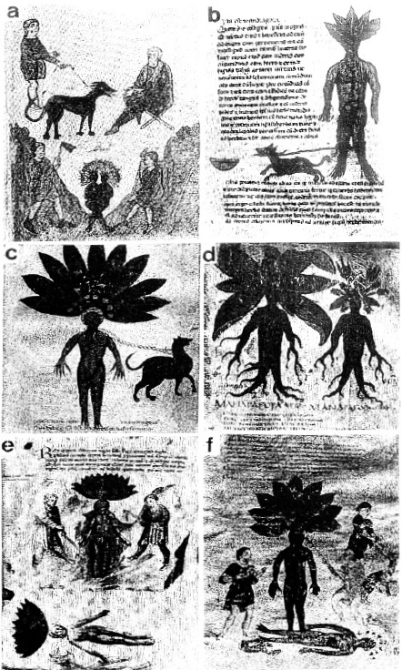

ŞEKİL 11. Çeşitli eserlerden mandragora ve zincirli köpek betimleri:
Üstte: Bir adam, mandragoranın çıkarılmasından önce köpeğe yiyecek veriyor, sağda Dioskorides oturuyor; Altta: İki adam, siyam ikizlerine benzer yapıdaki mandragorayı topraktan çıkarmak üzere bitkinin etrafını kazıyor.
Yemek dolu çanağa ulaşmak isteyen zincirli köpek ve mandragora (Universitätsbibliothek, Leiden).
Kökleri insan yapısında olan mandragora bitkisi: Bir köpek, bir zincirle ona bağlanmış (Biblioteca Laurenziana, Floransa).
Bir Dioskorides nüshasında mandragoranın iki örneği: İS 700’lere tarihlenen Codex neapolitanus’un ressamı, burada adamotunu doğasına sadık bir şekilde vermeye çalışmıştır (Biblioteca Nazionale, Napoli).
Üstte: İki adam, mandragorayı çıkarmaya çalışıyor; Altta: Mandragora ve köpek, yerde ölü yatıyor (Yale Medical Library, New Haven).
13. yüzyılda Sicilya kaynaklı Medicina antiqua adlı elyazmasından, adamotu kökünün yaşamsal tehlike dolu biçimde topraktan çıkarılması: İki kök kazıcısı, boylarından büyük dişi “Havva-adamotu”nu kancalı sopalarla eşelerken, yerde ölü eril “Adem-adamotu” ile ölü köpek, bu işlemin hazin sonunu göstermektedir (Die Österreichische Nationalbibliothek, Viyana).29, 33